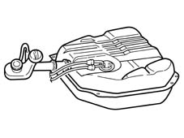
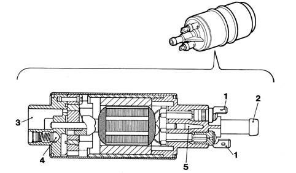
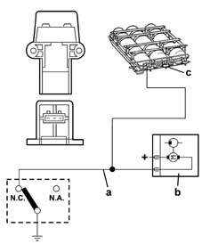
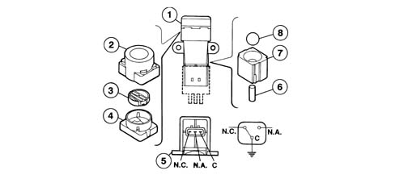

CONSTRUCTION SPECIFICATIONS
- Path
- Descriptions > 10 ENGINE > 1040 FUEL TANK AND PIPES > 1040A FUEL TANK AND COMPONENTS > CONSTRUCTION SPECIFICATIONS
- Kind
- system description
- Applies to
- engines: 2.0 16V; all production periods; only with equipment: Methane and GPL
- Interactive page
- https://sloeber94.github.io/elrnDB-fDct/en/#/244000378
Applies to: engines: 2.0 16V; all production periods
FUEL TANK

ELECTRIC FUEL PUMP

INERTIA SWITCH

Intertia switch components
